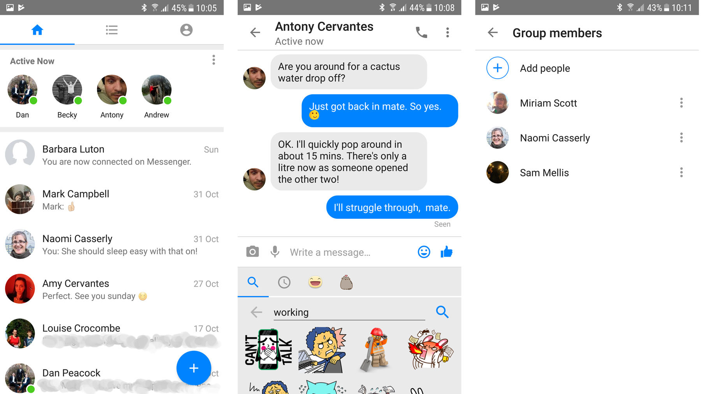

Discord
Discord
Social Media
Discord
Discord is a VoIP and instant messaging social platform.
Users have the ability to communicate with voice calls, video calls, text messaging,
media and files in private chats or as part of communities called "servers".
A platform with public chatroom where you can socialize with strangers online.
It has many servers with different themes for you to enjoy.
 YouTube
YouTube

YouTube is a global online video sharing and social media platform headquartered in San Bruno, California.
It was launched on February 14, 2005, by Steve Chen, Chad Hurley, and Jawed Karim.
It is owned by Google and is the second most visited website, after Google Search.
This platform is very helpful because it has entertainment and educational contents which I like.
I sometimes use this for sleep music or studies.

Messenger is a proprietary instant messaging app and platform developed by Meta Platforms.
Originally developed as Facebook Chat in 2008, the company revamped its messaging service in 2010,
released standalone iOS and Android apps in 2011, and released standalone Facebook Portal hardware for Messenger calling in 2018.
I use this app for online classes and for my other duty to communicate with my family, friends, and other business.